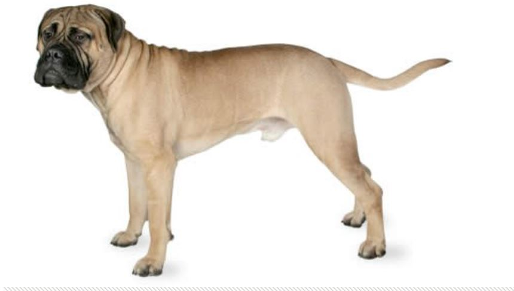
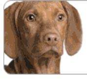

dog!
Some dogs are simply easier than others: they take to training better and are fairly easygoing. They're also resilient enough to bounce back from your mistakes or inconsistencies. Dogs who are highly sensitive, independent thinking, or assertive may be harder for a first-time owner to manage. You'll get your best match if you take your dog-owning experience into account as you choose your new pooch.
The volunteer was a man experienced with dogs, but he must have soon regretted his act. Despite being given a head start, he was pursued, caught, and knocked down by the dog three times.
It's okay for them to spend time in a fenced yard or kennel run, but primarily these dogs should live in the home. After all, you want a guardian dog to be Johnny-on-the-spot in the event of an intruder as well as to be emotionally close to you so he'll want to protect you. The Bullmastiff is a silent watchdog who detains unwelcome visitors with his size and presence, biting only as needed.